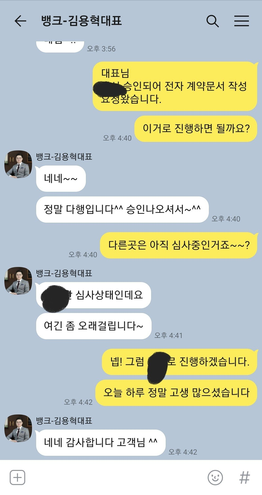
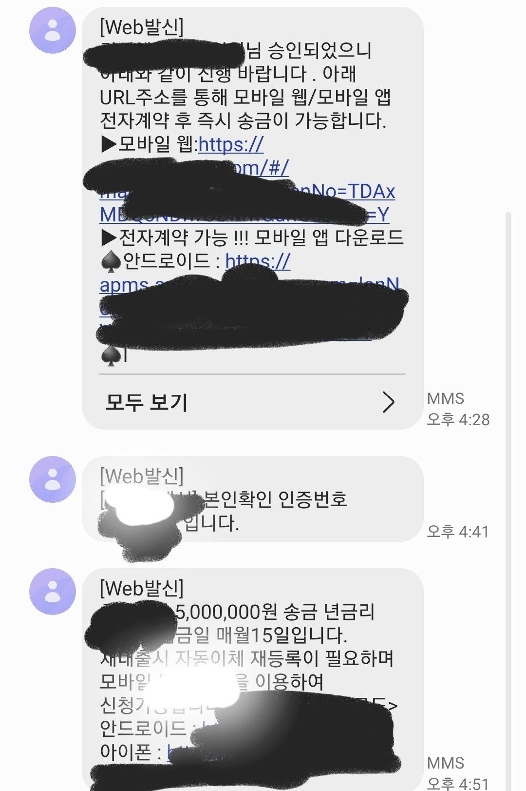

[직장인대출] 김용혁 대표님 감사합니다.
안녕하세요
금일 대출 실행되어 감사 인사 전합니다.
약 2년 전부터 급히 필요한 자금은 뱅크앤론을 통하여 대출을 받고
신용상태 개선 및 이후 계획까지 도움을 받고 있습니다.
이번에도 급하게 필요하게되어
김용혁 대표님께 오전에 톡 상담을 요청하였습니다.
성별 : 남
직업 : 회사원 (정직원)
재직기간 : 8년
4대보험 : 유
연봉 : 4,400만원 (20년도 기준)
신용점수 : 638점 / 765점
기대출
담보대출 : 1억 5천 2백
신용대출 (6건) : 6천 1백
작년에 진행했던 내용을 기억하시고 오전에 저축은행 쪽으로 진행을 도와주셨습니다.
하지만 우려했던데로... 기대출이 워낙 많기에 전부 부결..ㅜㅜ
어쩔수 없이 대부권으로 다시 도움 요청을 드리고
오후부터 계속 진행을 해주셔서 한곳에서 승인이 났습니다.
처음 기대했던거는 기존 대출 건수를 줄이는 통합대환 및 여유자금이였지만
기대출이 워낙크기에 대환은 불가능..
하지만 필요한 금액 진행하게되어 한 시름 놓게 되었습니다.
도움 받을 때마다 느끼는거지만 긴 상담시간에도 불구하고
같이 안따까워 하시면서 희망도 주시고, 최대한 좋은 결과를 얻기 위해 노력해 주셔서 정말 감사합니다.

